We asked the question: "What is financial freedom?" To a lot of people, the answer seemed tempting yet indefinite. What is then, finance on your own terms? Here is my interpretation.
Duration
2017 October - 2018 April
The ace team
Me and my brain
My role
Research and design
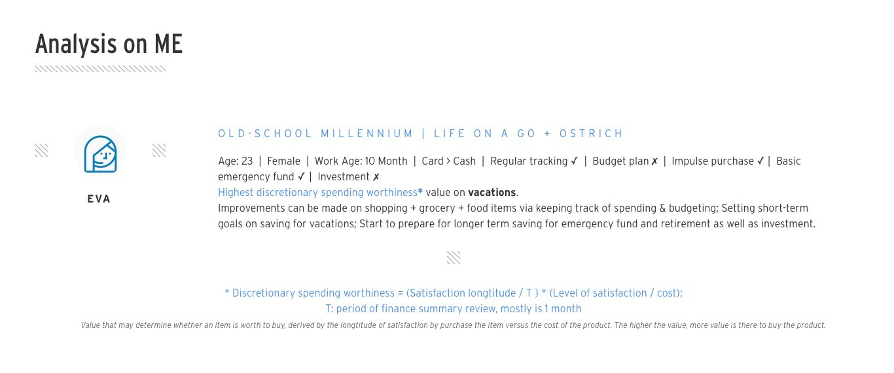
A dissection of my own finnancial behaviours, in year 2017, thus age 23.
Day 0
Inspired by the idea of a Northstar guiding the direction of designer visions, we decided to tap on the ultimate goal of anyone's personal finance - financial freedom, whatever that is. So I want to find out what financial freedom is, and more importantly,
"How can we help them reach their financial freedom?"
The ultimate question
This force us to look at it with a change in perspective; we are no bank, but people; we need no jargon, but to become easier to use, better at service, and lighter at heart. We want users to make the most out of their finance. We can't be a bank for their money. We have to be a friend.
Day 1
The process was kicked off by doing marketing and background research on the concept of "Financial wellness", to explore the meaning of this term as well as the different personal finance behaviours across different demographics, country and people with different lifestyles.
Here is the full background research report
Based on some of the findings through this research, I was able to generate a brief
financial overview on myself, back in year 2017.
×
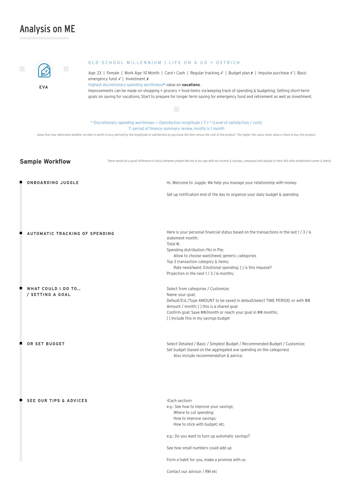
As geek as I am, I created an equation for measuring how well worth money can be spent on a particular category for different individuals:
* Discretionary spending worthiness = (Satisfaction longtitude / T ) * (Level of satisfaction / cost);
T: period of finance summary review, mostly 1 month
*This is defined by me as a value that may determine whether an item is worth to buy, derived by the longtitude of satisfaction by purchase the item versus the cost of the product. The higher the value, more value is there to buy the product.
So for me, I have a high DSW value in Travel & Fitness
In order to obtain real user data and behavioural analysis, I created a survey and distributed it among my collegues, friends in Singapore as well as back in China, to understand better about money and themselves.
Gen X
Keep track, more analytical approach, somewhat proactive; Regular savings, mostly invest & budget; prefer cards, positive in PFM; wish to understand PFM better, Accumulate more wealth, Know more abt investment; Prob with impulse purchase, saving for retirement, scattered on others. Tend to family & finan websites. Neutral opinion on other agents for financial advisory. Save, and buy gadgets.
Limitation: $ may not be a concern for these people unless they ‘regret’; usage and adoption time of the mobile devices are unknown. More in depth linkage & content required. More broad possible solutions.
Gen Z
Keep track, mostly apps, somewhat proactive; Mostly keep budget, some regular savings; prefer cards, neutral in PFM; wish to understand PFM better, Accumulate more wealth, Know more abt investment; Prob with insurance, retirement, emergency funds. Tend to family primarily. Neutral opinion on other agents for financial advisory. Save, and dinner.
Limitation: the fact that they dun have much money/many income yet also eliminated problem regarding ‘saving’ along the way. Usage and adoption time of the mobile devices are high. Opinions can be influencial to these group. Limited solutions due to the financial limitations. However, possibility to build a longer term relationship w us.
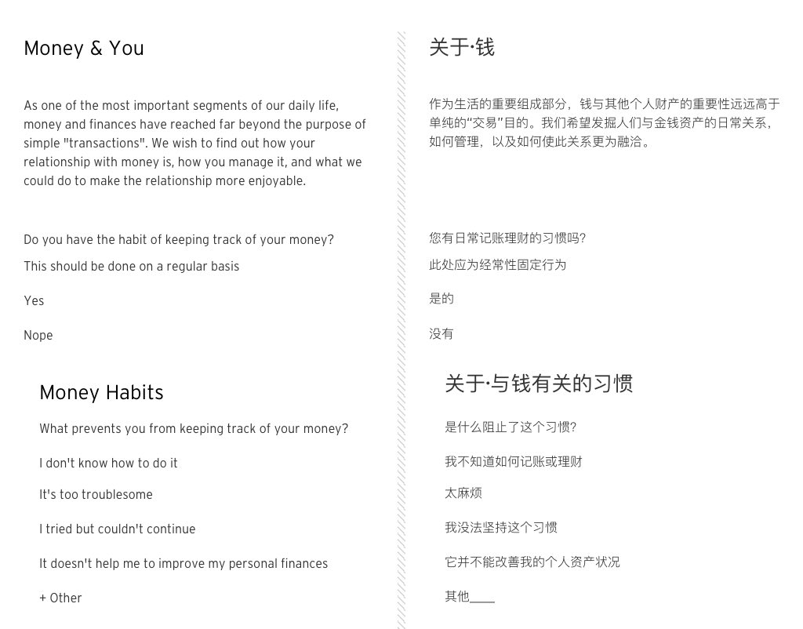
×
I. The questionnaire (full script)
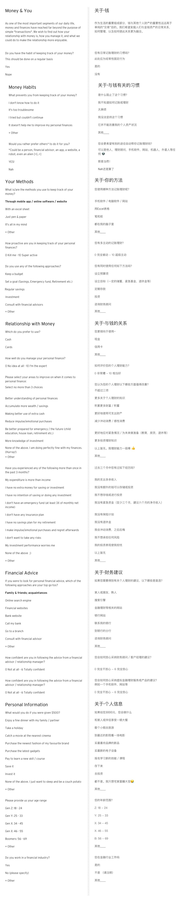
I. The questionnaire
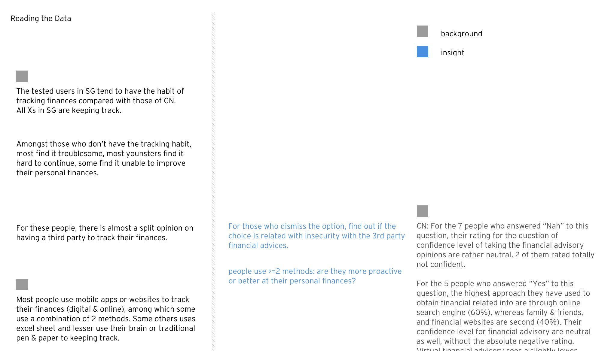
×
II. The finding (raw data)
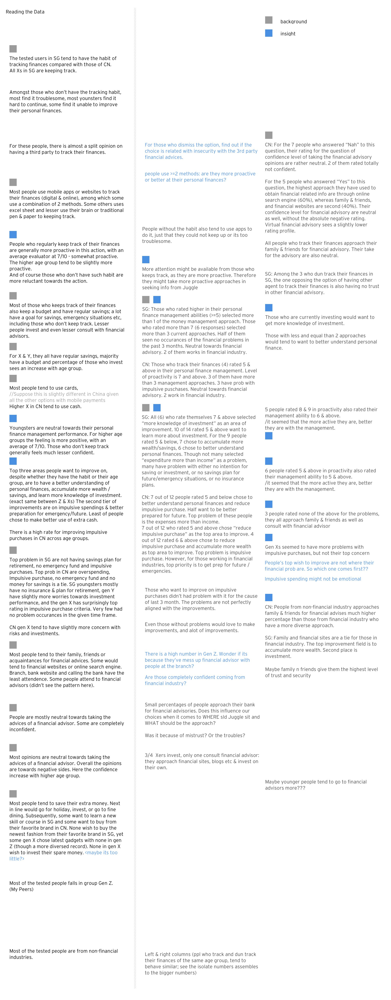
II. The finding
Day 2
From the findings in the initial stages, I created some high-level interaction logic from the
system and the
users' perspective.
×
System flow (high level)
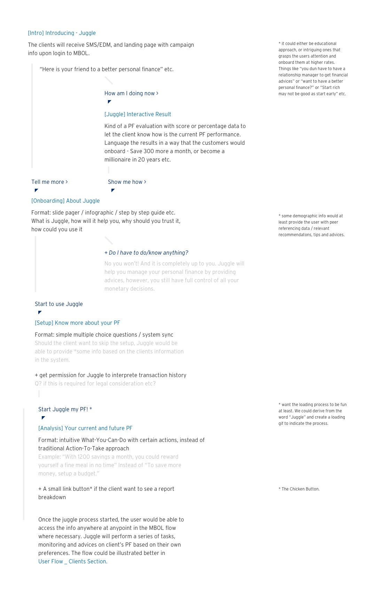
×
User flow (high level)
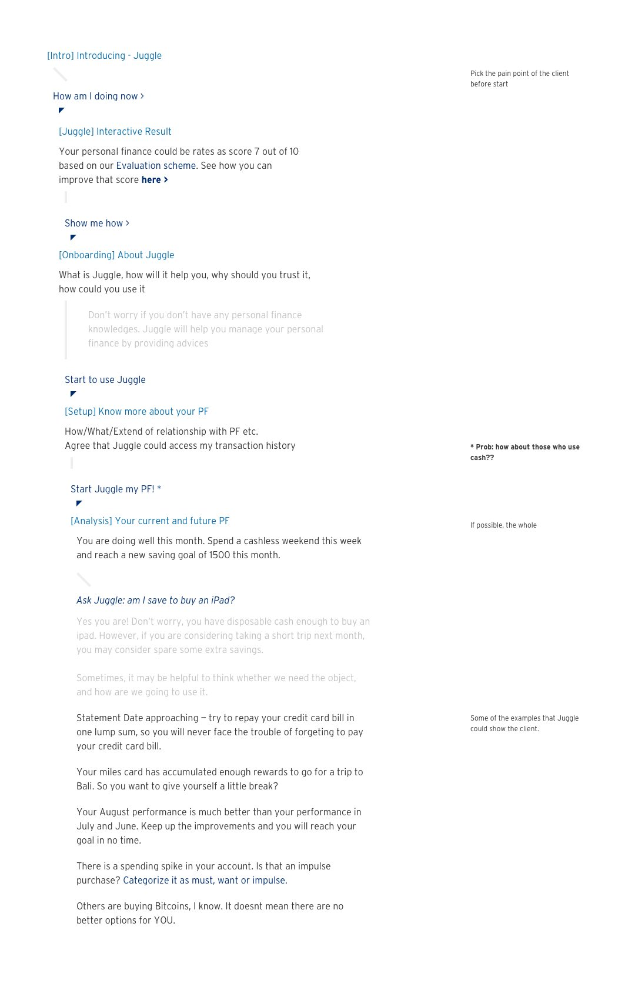
I've also proceeded to create two key user profiles, along with identifying the key stages of personal finance management for these two profiles. These two profiles are created based on the research findings and real user behaviours.
People who don’t regularly keep track of their finances and who don’t mind having others to help them doing it. They tend to want to acquire more knowledge on PF and personal wealth in the form of accumulation.
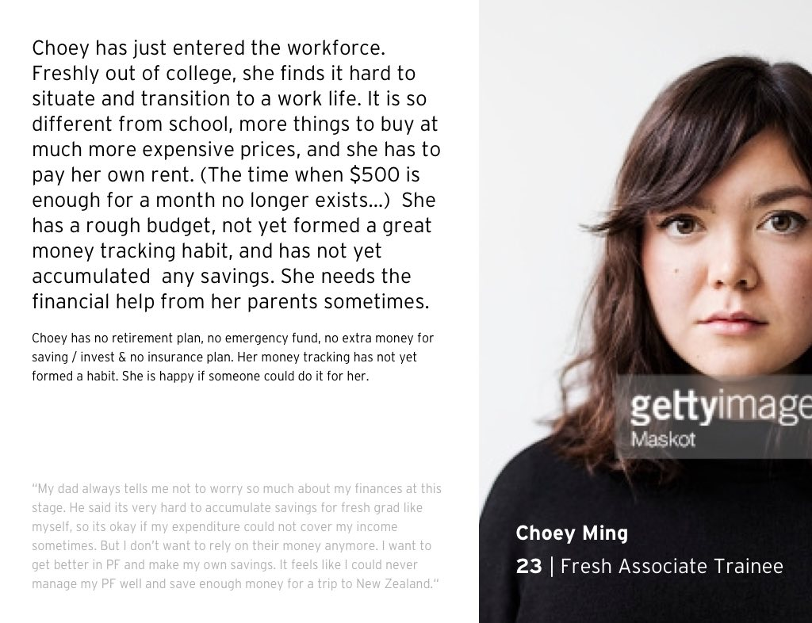
User profile I: Choey
People who do regularly keep track of their finances, have the basic knowlegdes of personal finance (PF) managements, who would love to learn more about investments & how to overall manage PF better; wealth in form of re-generation.
User profile II: Tim
According to these two profiles, I created an overview with tangible stages of one's personal finance management:
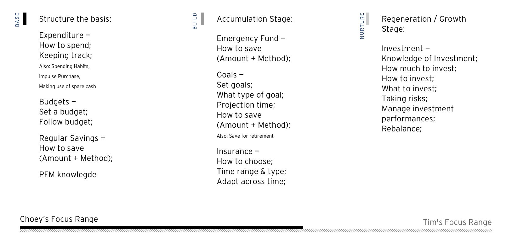
Profile analysis: Key stages of personal finance management
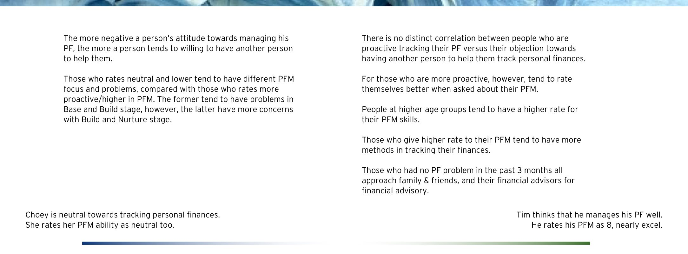
Profile analysis: Attitude towards personal finance management
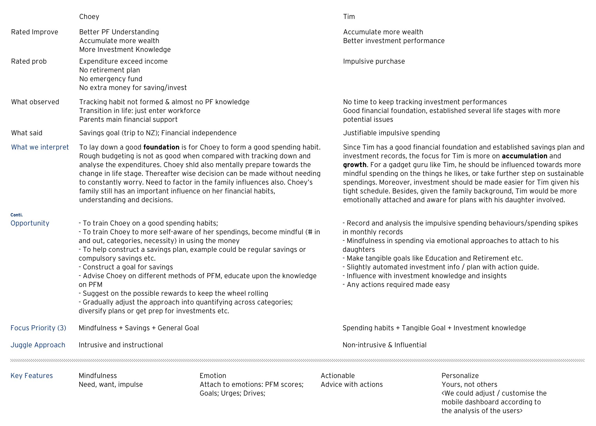
Profile analysis: Characteristics, opportunities, key features and approach
To tie back to our potential service offerings, I decided to trim down the solution approach, starting from the tone of approach, to some of the key engagement points through a customer's journey. Thereafter generalized the common problems they are facing, and proposed a solution applicable to those problems.
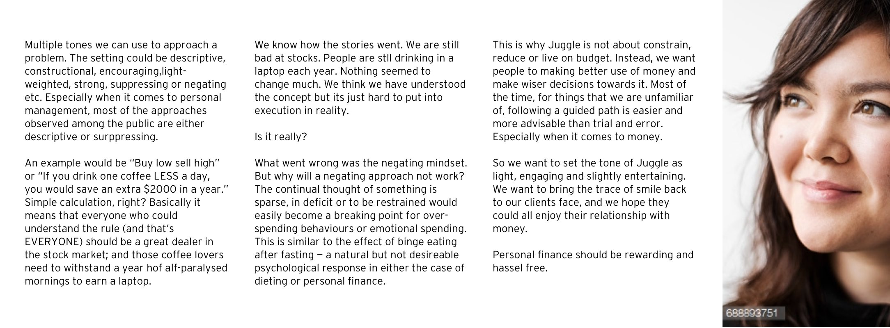
Service offering: Tone of approach
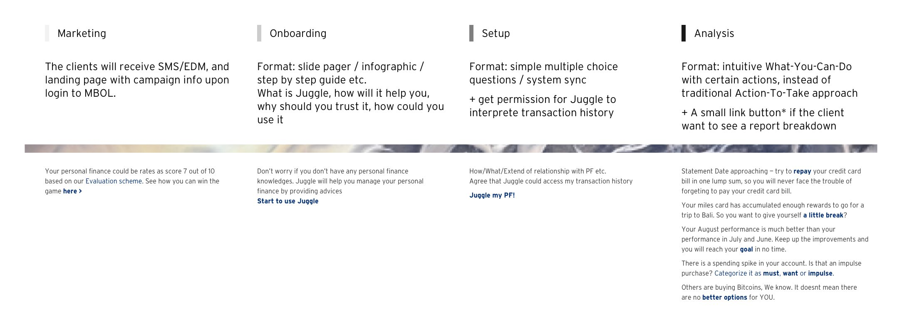
Service offering: Points of engagement (Overview) Service offering: List of common problems
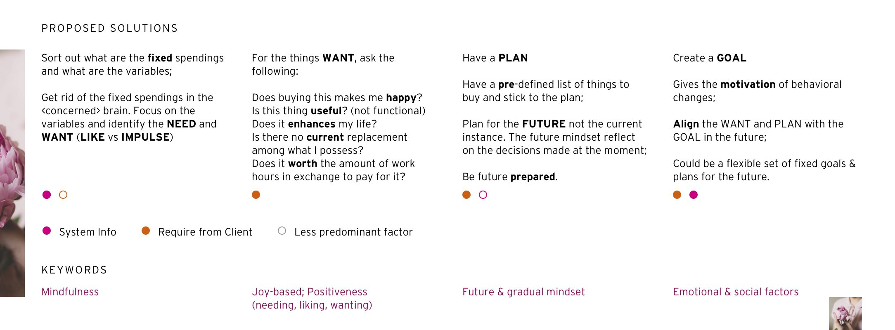
Service offering: List of proposed solutions
This is where I concluded with the key focus point and the overall directions of the solutions:
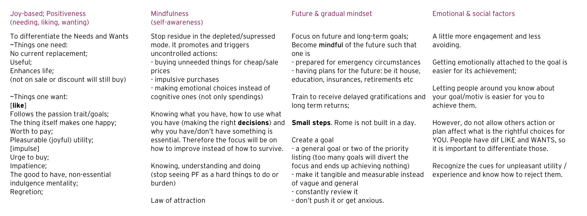
Service offering: Strategized solutions
The takeaway
Managing communications is such an important step in any companies that has more than one team. Having realistic delivery target, having efficient conversations with the respective parties and making sure to keep everyone in the picture is essential to create successful product and lift the stress off the designers. Among the teams within the same department, it is far more efficient if everyonne is aware of what each others are doing than duplicating the efforts.